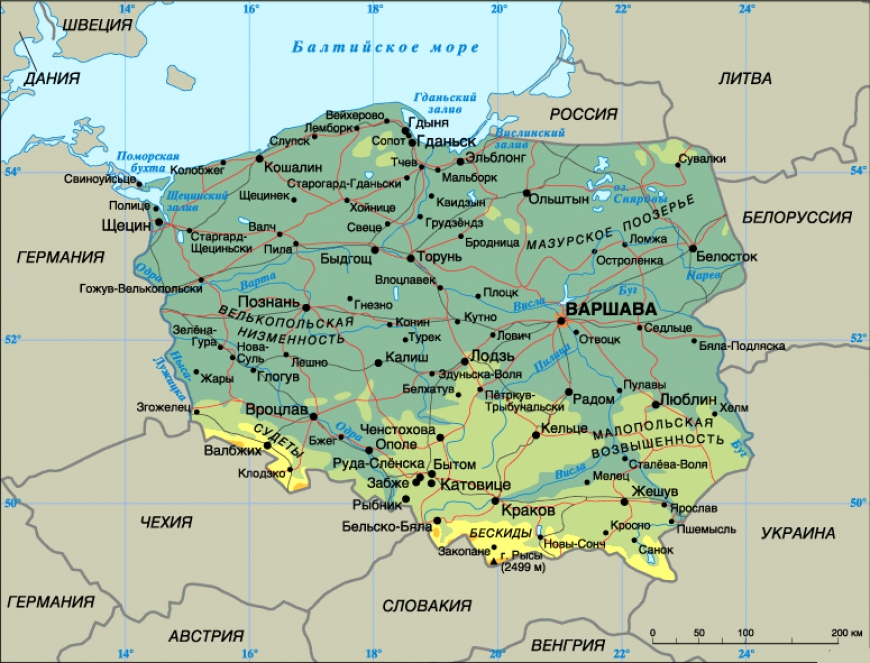
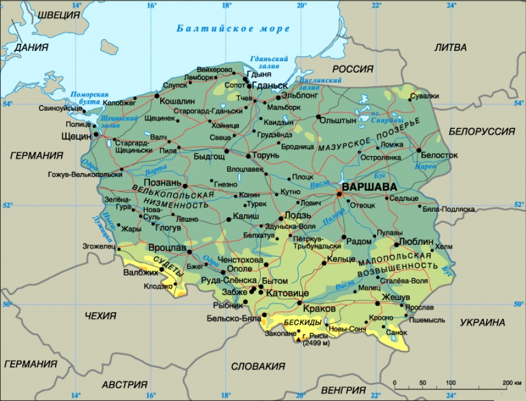
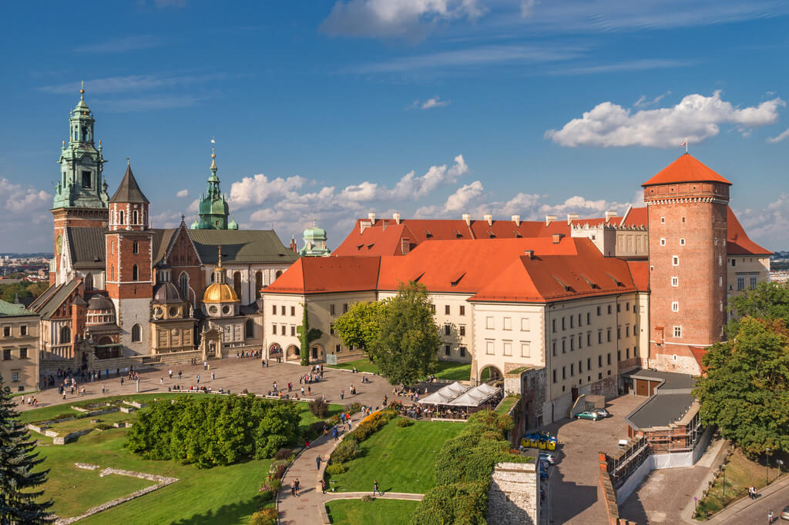
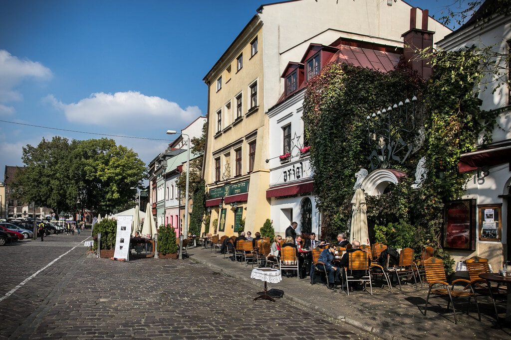
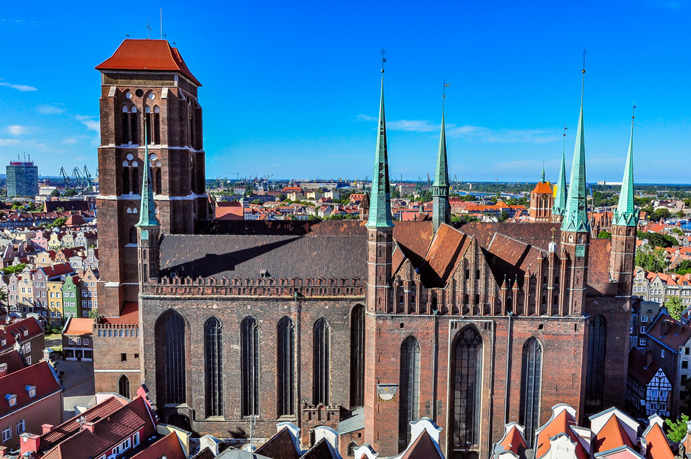
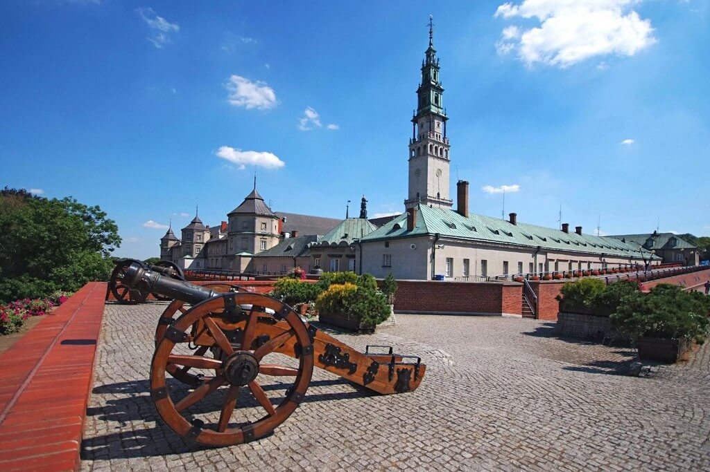
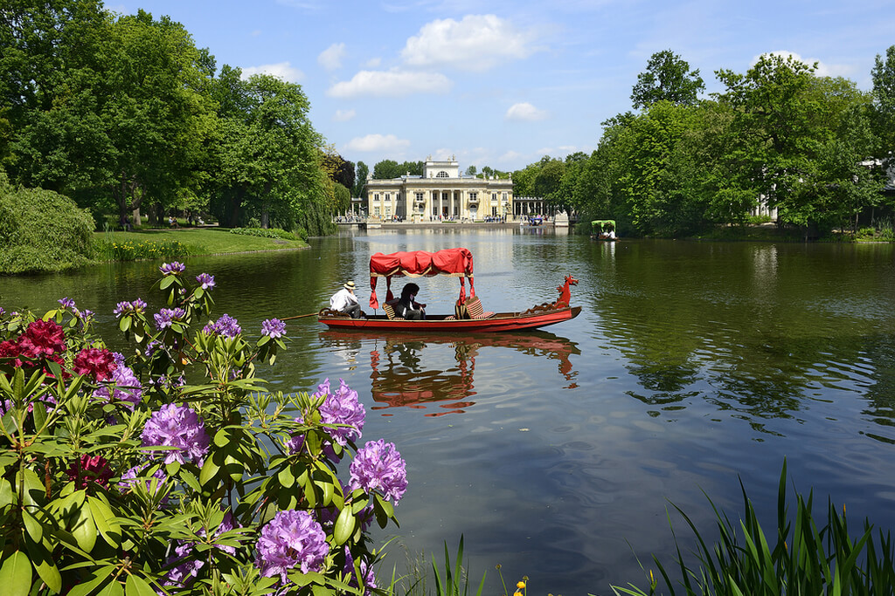
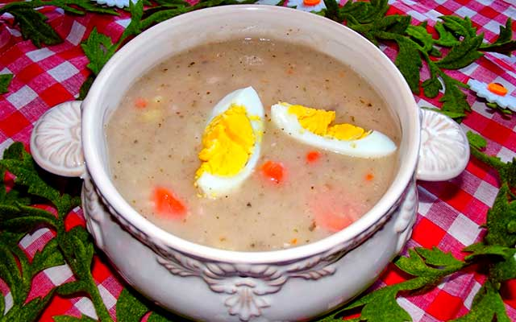
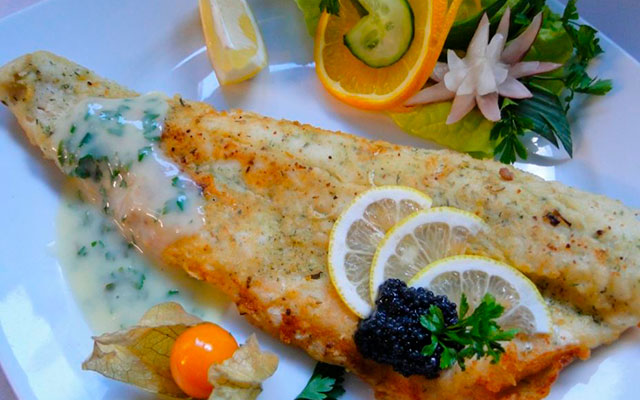

Географическое положение
Польша, официальное название — Республика Польша — государство в Центральной Европе. Расположена в центре Европы.
Омывается на севере Балтийским морем. Имеет сухопутную границу с Россией (Калининградской областью), Литвой, Белоруссией, Украиной, Словакией, Чехией и Германией.
 

Климат
Климат в Польше умеренный, переходящий от морского к континентальному. Снег лежит до трех месяцев в году.
В северных и западных районах преобладает умеренный морской климат с прохладным летом и большим количеством осадков. На востоке царит континентальный климат с жарким сухим летом.
На вершинах Татр и Судет средняя температура в июле не превышает +9 °С. Самое теплое лето — в центральной части Польши.
Частое явление — облачность. Максимальное количество осадков приходится на летние месяцы.
«Хальны» — сильный, порывистый ветер, дующий в Татрах — вызывает повышение температуры и снижение влажности воздуха на противоположной от ветра стороне гор.
История
Основание площади Польши
История Польши — история государства западных славян, находящегося в Восточной Европе, возникшего в конце X-начале XI вв. и имеющего длительную, трагическую историю.
С VII века до н. э. до IV века н. э. на территории Польши протекал процесс этногенеза славян.
Политика перестройки, проводимая Горбачёвым, ослабила влияние СССР на Польшу, что привело к переменам в стране.
Новая волна массовых забастовок весной-осенью 1988 года вынудила руководство ПОРП пойти на переговоры в Магдаленке с Лехом Валенсой и его сторонниками.
Было достигнуто соглашение о созыве «круглого стола» между правительством и оппозицией, который начал работу 6 февраля 1989 года.
4 апреля он завершился подписанием соглашения, главными пунктами которого были проведение свободных выборов, введение поста президента и верхней палаты Сейма (Сенат).
Достопримечательности
Вавель

Казимеж

Краков
Архитектурный комплекс, расположенный на холме в Кракове. Включает в себя кафедральный собор св. Станислава и Вацлва и Королевский замок. Для Польши эти сооружения являются таким же символом, как и Кремль для России. Массивный замок в готическом стиле, собор с высокими 20-метровыми башнями, несколько небольших часовен и церквей – они создают неповторимый архитектурный ансамбль, который ежедневно посещают сотни туристов.
Памятник истории Польши, входит в район Старого города Кракова. Исторически является местом проживания евреев. Здесь снимался знаменитый фильм «Список Шиндлера» о холокосте. В еврейском квартале расположено 7 синагог, которым удалось выстоять во времена Второй Мировой Войны, ныне они отреставрированы. Путешественники отмечают уют и особую атмосферу в Казимеже, отличную от Старого города.
Костёл Святой Марии

Гданьск
Строительство костела высотой 105 метров длилось с середины XIV века по начало XVI века. На колокольне обустроена смотровая площадка с видами на исторический центр города. Внутри находятся великолепные произведения искусства времен Средневековья – каменная Пиета, астрономические часы, алтарь, возведенный в начале XVI века. Местные жители считают чудом то, что церковь практически не пострадала при пожаре в 1945 году.
Монастырь Ясная Гора

Ченстохова
Католический монастырь в городе Ченстохова. Принадлежит монахам ордена паулинов. Они воздвигли монастырь на холме высотой 293 метра в XIV веке. Высота колокольни монастыря в стиле барокко составляет 106 метров. По углам монастыря четырехугольной формы расположены мощные стреловидные бастионы. Основная достопримечательность – Ченстоховская икона Божией Матери, считающаяся среди верующих чудотворной.
Парк Лазенки

Варшава
Старинный дворцово-парковый комплекс с памятниками культуры и истории. Основан в XVII веке по указу гетмана Любомирского. В нем расположен Дворец на воде – уединенный павильон с баней в китайском стиле. Другая достопримечательность парка – Римский театр. Это амфитеатр, построенный у воды, украшенный статуями античных поэтов. Несомненно, стоит осмотреть Старую и Новую оранжерею, Мышлевицкий дворец, Белый домик.
Кухня
| Журек |
|---|
| Бигос |
|---|

| Судак по-польски |
|---|
| Утка с яблоками |
|---|